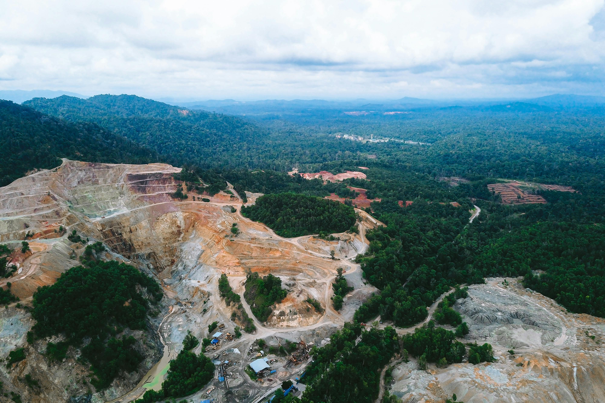
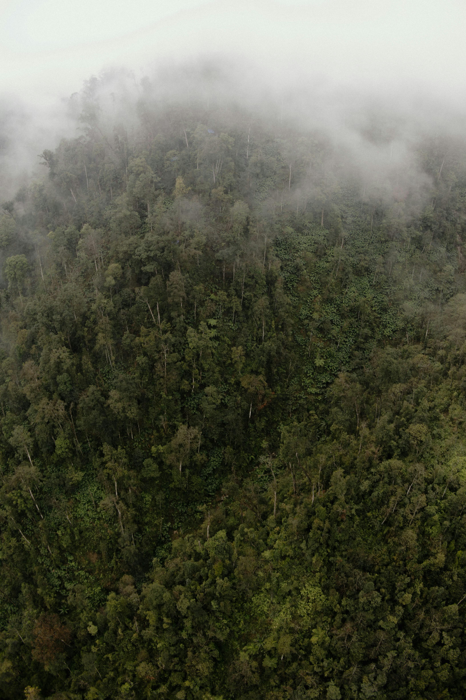

Forests Are More Than Trees
Forests are home to indigenous communities, biodiversity, rivers, and wildlife.
Indonesia is losing one of the world's last tropical rainforests.
Become a ProtectorPapua rainforest is one of the richest ecosystems on Earth.
hectares lost since 2001
increase in deforestation
hectares lost recently
Forests are home to indigenous communities, biodiversity, rivers, and wildlife.


Every voice matters. Every action counts.